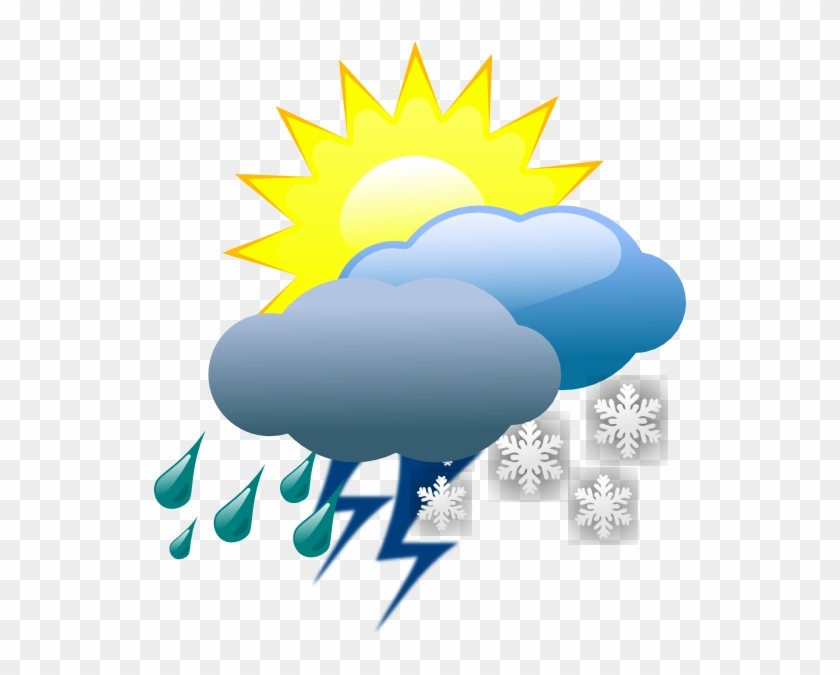

<div class="text-center">
  <h1>
    Welcome to {{ title }}!
  </h1>
  
</div>
<div class="container">
  <mat-form-field>
    <mat-select [(ngModel)]="location" placeholder="Select City" (change)="getWeatherData()">
      <mat-option value="UK">UK</mat-option>
      <mat-option value="England">England</mat-option>
      <mat-option value="Scotland">Scotland</mat-option>
      <mat-option value="Wales">Wales</mat-option>
    </mat-select>
  </mat-form-field>
  <mat-form-field>
    <mat-select [(ngModel)]="metric" placeholder="Select Weather Type" (change)="getWeatherData()">
      <mat-option value="Tmax">Tmax (max temperature)</mat-option>
      <mat-option value="Tmin">Tmin (min temperature)</mat-option>
      <mat-option value="Rainfall">Rainfall (mm)</mat-option>
    </mat-select>
  </mat-form-field>
  <p class="text-danger" *ngIf="errorMsg">{{errorMsg}}</p>
</div>
<div class="container">
  <div class="dateContainer">
      <label>From: </label>
      <mat-form-field>
        <input matInput [disabled]="!(location && metric)" [matDatepicker]="fromPicker" placeholder="Choose a date" (dateInput)="getStartDate($event)" (dateChange)="getStartDate($event)">
        <mat-datepicker-toggle matSuffix [for]="fromPicker"></mat-datepicker-toggle>
        <mat-datepicker touchUi #fromPicker></mat-datepicker>
      </mat-form-field>
  </div>
  <div class="dateContainer">
      <label>To: </label>
      <mat-form-field>
        <input matInput [disabled]="!(location && metric)" [matDatepicker]="toPicker" placeholder="Choose a date" (dateInput)="getEndDate($event)" (dateChange)="getEndDate($event)">
        <mat-datepicker-toggle matSuffix [for]="toPicker"></mat-datepicker-toggle>
        <mat-datepicker touchUi #toPicker></mat-datepicker>
      </mat-form-field>
  </div>
</div>
<div *ngIf="chart" class="chartContainer">
  <canvas id="canvas">{{ chart }}</canvas>
</div>


